The original, as published: Tony R. Kuphaldt, Lessons In Industrial Instrumentation, Cascade and ratio control. CC BY 4.0, https://creativecommons.org/licenses/by/4.0/. Imported as published, from https://www.ibiblio.org/kuphaldt/socratic/sinst/book/liii.pdf https://www.ibiblio.org/kuphaldt/socratic/sinst/book/liii.pdf
A simple control system drawn in block diagram form looks like this:
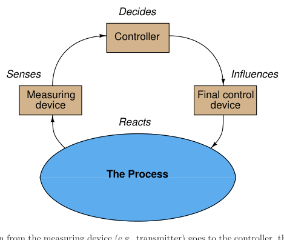
Information from the measuring device (e.g. transmitter) goes to the controller, then to the final control device (e.g. control valve), influencing the process which is sensed again by the measuring device. The controller’s task is to inject the proper amount of negative feedback such that the process variable stabilizes over time. This flow of information is collectively referred to as a feedback control loop. To cascade controllers means to connect the output signal of one controller to the setpoint of another controller, with each controller sensing a different aspect of the same process. The first controller (called the primary, or master) essentially “gives orders” to the second controller (called the secondary or slave) via a remote setpoint signal.
lumber mill where logs were cut into lumber not only according to minimum waste, but also according to the real-time market value of different board types and stored inventory. The joke was, if the market value of wooden toothpicks suddenly spiked up, the control system would shred every log into toothpicks in an attempt to maximize profit!
Thus, a cascade control system consists of two feedback control loops, one nested inside the other:
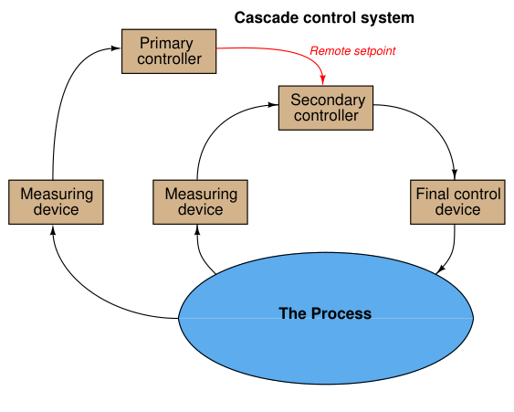
A very common example of cascade control is a valve positioner, which receives a command signal from a regular process controller, and in turn works to ensure the valve stem position precisely matches that command signal. The control valve’s stem position is the process variable (PV) for the positioner, just as the command signal is the positioner’s setpoint (SP). Valve positioners therefore act as “slave” controllers to “master” process controllers controlling pressure, temperature, flow, or some other process variable. The purpose of cascade control is to achieve greater stability of the primary process variable by regulating a secondary process variable in accordance with the needs of the first. An essential requirement of cascaded control is that the secondary process variable be faster-responding (i.e. shorter lag and dead times) than the primary process variable. An analogy for understanding cascade control is that of delegation in a work environment. If a supervisor delegates some task to a subordinate, and that subordinate performs the task without further need of guidance or assistance from the supervisor, the supervisor’s job is made easier. The subordinate takes care of all the little details that would otherwise burden the supervisor if the supervisor had no one to delegate to. This analogy also makes it clear why the secondary process variable must be faster-responding than the primary process variable: the supervisor-subordinate management structure fails to work if the supervisor does not maintain focus on long-term goals (i.e. longer-term than the completion time of the tasks given to subordinates). If a supervisor focuses on achieving goals that are shorter-term than the time required for subordinates to complete their assignments, the supervisor will inevitably call for “course changes” that are too quick for the subordinates to execute. This will lead to the subordinates “lagging” behind the supervisor’s orders, to the detriment of everyone’s satisfaction.
An example of cascade control applied to a real industrial process is shown here, for a dryer system where heated air is used to evaporate water from a granular solid. The primary process variable is the outlet air exiting the dryer, which should be maintained at a high enough temperature to ensure water will not remain in the upper layers of the solid material. This outlet temperature is fairly slow to react, as the solid material mass creates a large lag time:
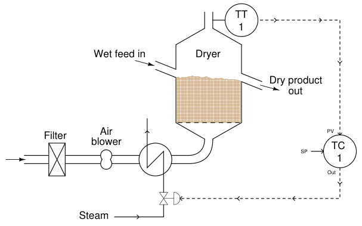
There are several parameters influencing the temperature of the outlet air other than the moisture content of the drying material. These include air flow, ambient air temperature, and variations in steam temperature. Each one of these variables is a load on the process variable we are trying to control (outlet air temperature). If any of these parameters were to suddenly change, the effect would be slow to register at the outlet temperature even though there would be immediate impact at the bottom of the dryer where the heated air enters. Correspondingly, the control system would be slow to correct for any of these changing loads.
We may better compensate for these loads by installing a second temperature transmitter at the inlet duct of the dryer, with its own controller to adjust steam flow at the command of the primary controller:
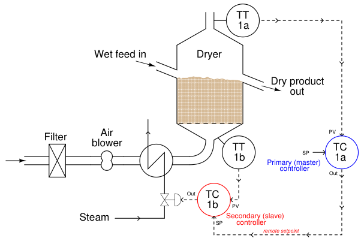
Now, if any of the loads related to incoming air flow or temperature vary, the secondary controller (TC-1b) will immediately sense the change in dryer inlet temperature and compensate by adjusting steam flow through the heat exchanger. Thus, the “slave” control loop (1b) helps stabilize the “master” control loop (1a) by reacting to load changes long before any effect might manifest at the dryer outlet. A helpful way to think of this is to consider the slave controller as shielding the master controller from the loads previously mentioned (incoming air flow, ambient temperature, and steam temperature). Of course, these variables still act as loads to the slave controller, as it must continuously adjust the steam valve to compensate for changes in air flow, ambient air temperature, and steam temperature. However, so long as the slave controller does a good job of stabilizing the air temperature entering the dryer, the master controller will never “see” the effects of those load changes. Responsibility for incoming air temperature has been delegated to the slave controller, and as a result the master controller is conveniently isolated from the loads impacting that loop. To re-emphasize an important point, one of the non-negotiable requirements for cascade control is that the secondary (slave) loop must be faster-responding than the primary (master) loop. Cascade control cannot function if this speed relationship is reversed. Temperature controller TC-1b is able to be a slave to controller TC-1a because the natural response time of the temperature at the dryer’s bottom is much shorter than at the dryer’s top with respect to any changes in steam valve position.
A common implementation of cascade control is where a flow controller receives a setpoint from some other process controller (pressure, temperature, level, analytical, etc.), fluid flow being one of the fastest-responding process types in existence. A feedwater control system for a steam boiler – shown here in pneumatic form – is a good example:
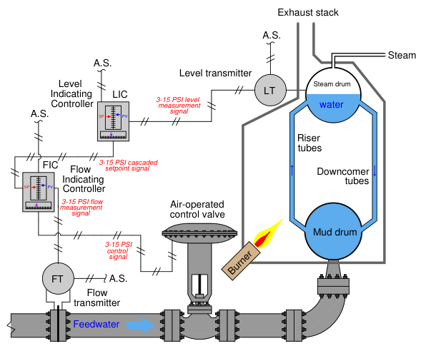
The “secondary” or “slave” flow controller works to maintain feedwater flow to the boiler at whatever flow rate is desired by the level controller. If feedwater pressure happens to increase or decrease, any resulting changes in flow will be quickly countered by the flow controller without the level controller having to react to a consequent upset in steam drum water level. Thus, cascade control works to guard against steam drum level instability resulting from changes in the feedwater flow caused by factors outside the boiler. As stated previously, the slave (flow) controller effectively shields the master (level) controller from loads in the feedwater supply system, so that master controller doesn’t have to deal with those loads. This level/flow cascade control system also embodies the principle of the secondary (slave) loop being faster-responding than the primary (master) loop. Water flow is an inherently fast process, the flow rate responding immediately to changes in valve position. By contrast, water level is a much slower-responding type of process. If you perform a “thought experiment” where the feedwater valve is suddenly opened fully, it is easy to see that the feedwater flow rate will immediately reach its full
(100%) value while the steam drum’s water level will merely begin to rise, taking time to reach its full (100%) value. It is worth noting that the inclusion of a flow control “slave” loop to this boiler water level control system also helps to overcome a potential problem of the control valve: nonlinear behavior. In the control valves chapter, we explore the phenomenon of installed valve characteristics (Section 27.13.1 beginning on page 2194), specifically noting how changes in pressure drop across a control valve influences its throttling behavior. The result of these pressure changes is a non-linearization of valve response, such that the valve tends to be more responsive near its closed position and less responsive near its open position. One of the benefits of cascaded flow control is that this problem becomes confined to the secondary (flow control) loop, and is effectively removed from the primary control loop. To phrase it simply, distorted valve response becomes “the flow controller’s problem” rather than something the level controller must manage. The result is a level control system with more predictable response.
A classic example of cascade control strategy is found in motion control applications, where an electric motor is used as the final control element to precisely position a piece of machinery. In this capacity, the motor is usually called a servo. Robotic systems make extensive use of servo motors and cascaded control loops to modulate power to those motors. The following illustration shows a triple-cascade control system3 for a motor-actuated elevator, precisely controlling the position of the elevator through cascaded velocity and motor current control:
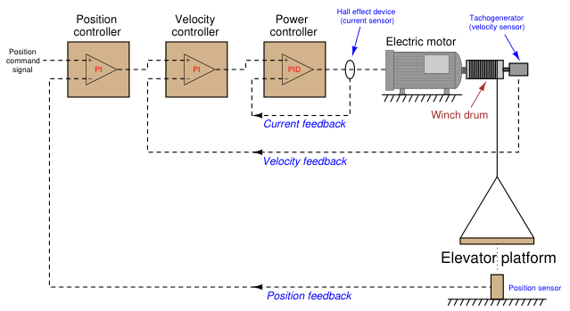
Hypothetically, the position of the elevator could be controlled with a single PID controller sensing platform position and directly sending power to the motor. However, much more precise control of the platform is achievable by sensing position, velocity, and motor current, and controlling each one of those variables with its own loop. In motion control systems, each successive variable is the time-derivative of its precursor. Velocity, for instance, is the time-derivative of position (v = dx
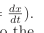
Motor current, which is usually proportional to motor torque, which in turn is proportional to the angular acceleration (α) of the winch and consequently the linear acceleration of the platform (a), is the time-derivative of velocity (a = dv dt ). If it were not for cascading, a single PID controller would have to control position by manipulating the acceleration of the platform (i.e. motor current). This would make the process characteristic “runaway” in nature, as any fixed amount of current will cause the platform to accelerate4.
3Interestingly, servo motor control is one application where analog loop controllers have historically been favored over digital loop controllers, simply for their superior speed. An opamp-based P, PI, or PID controller is lightning-fast because it has no need to digitize any analog process variables (analog-to-digital conversion) nor does it require time for a clock to sequence step-by-step through a written program as a microprocessor does. Servomechanism processes are inherently fast-responding, and so the controller(s) used to control servos must be faster yet. 4At one specific current level, the motor will develop just enough torque to hold the platform’s weight, at which point the acceleration will be zero. Any amount of current above this value will cause an upward acceleration, while any amount of current below this value will cause a downward acceleration.
Here with servomechanisms we see how cascading not only has the effect of “shielding” certain load variables from the master controller’s view, but it also simplifies the dynamic characteristics of the process from that same point of view. Instead of the position controller having to regulate an inherently “runaway” process, it now sees the process as having an “integrating” characteristic, since any constant output signal from the position controller results in the platform holding to a constant velocity (i.e. platform position will change at a constant rate over time, rather than at an accelerating rate).
A necessary step in implementing cascade control is to ensure the secondary (“slave”) controller is well-tuned before any attempt is made to tune the primary (“master”) controller. Just a moment’s thought is all that is needed to understand why this precedence in tuning must be: it is a simple matter of dependence. The slave controller does not depend on good tuning in the master controller in order to control the slave loop. If the master controller were placed in manual (effectively turning offits automatic response), the slave controller would simply control to a constant setpoint. However, the master controller most definitely depends on the slave controller being well-tuned in order to fulfill the master’s “expectations.” If the slave controller were placed in manual mode, the master controller would not be able to exert any control over its process variable whatsoever. Clearly then, the slave controller’s response is essential to the master controller being able to control its process variable, therefore the slave controller should be tuned first when initially commissioning or optimizing a cascade control system.
Just like supervisory control systems where a process controller receives a “remote” setpoint signal from some other system, the secondary (“slave”) controller in a cascade system typically has three different operating modes:
This means it is possible to defeat a cascade control system by placing the secondary controller in the wrong mode (automatic) just as it is possible to defeat any control system by placing the controller in manual mode. If a controller is “slaved” to another controller, it must be left in cascade mode in order for the control strategy to function as designed.
Most people reading this book have likely had the experience of adjusting water temperature using two hand valves as they took a shower: one valve controlling the flow of hot water and the other valve controlling the flow of cold water. In order to adjust water temperature, the proportion of one valve opening to the other must be changed. Increasing or decreasing total water flow rate without upsetting the outlet temperature is a matter of adjusting both valves in the same direction, maintaining that same proportion of hot to cold water flow. Although you may not have given it much thought while taking your shower, you were engaged in a control strategy known as ratio control, where the ratio of one flow rate to another is controlled for some desired outcome. Many industrial processes also require the precise mixing of two or more ingredients to produce a desired product. Not only do these ingredients need to be mixed in proper proportion, but it is usually desirable to have precise control over the total flow rate as well. A simple example of ratio control is in the production of paint, where a base liquid must be mixed with one or more pigments to achieve a desired consistency and color. A manually controlled paint mixing process, similar to the hot and cold water valve “process” in some home showers, is shown here. Two flowmeters, a ratio calculating relay, and a display provide the human operator with a live measurement of pigment-to-base ratio:
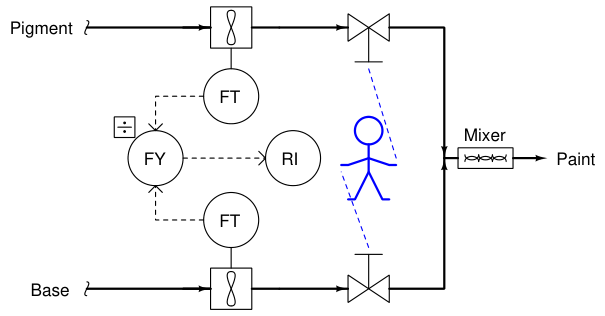
One alteration we could make to this mixing system is to link the two manual control valve handles together in such a way that the ratio of base to pigment was mechanically established. All the human operator needs to do now is move the one link to increase or decrease mixed paint production:
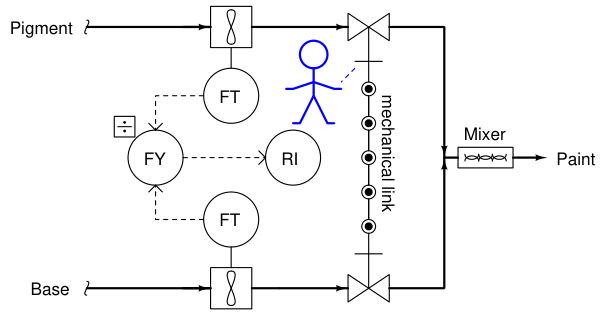
Adjusting the pigment-to-base ratio is now a matter of adjusting the linkage ratio, a task most likely performed by a mechanic or someone else skilled in the alignment of mechanical linkages. The convenience of total flow adjustment gained by the link comes at the price of inconvenient ratio adjustment.
Mechanical link ratio-control systems are commonly used to manage simple burners, proportioning the flow rates of fuel and air for clean, efficient combustion. A photograph of such a system appears here, showing how the fuel gas valve and air damper motions are coordinated by a single rotary actuator:
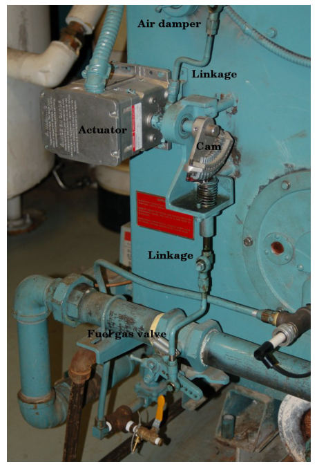
As you can see in this photo, the fuel gas valve is actuated by means of a cam, allowing precise “tuning” of the valve characteristics for consistent fuel/air ratio across a wide range of firing rates. Making ratio adjustments in such a linkage system is obviously a task for a skilled mechanic or technician.
A more automated approach to the general problem of ratio control involves the installation of a flow control loop on one of the lines and a flow-sensing transmitter on the other line. The signal coming from the uncontrolled flow transmitter becomes the setpoint for the flow control loop:
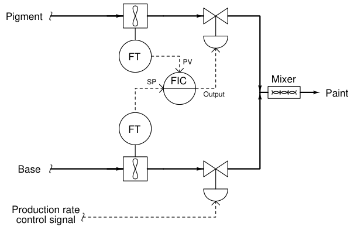
Here, the flow transmitter on the uncontrolled line measures the flow rate of base, sending a flow rate signal to the pigment flow controller which acts to match flow rates. If the calibrations of each flow transmitter are precisely equal to one another, the ratio of pigment to base will be 1:1 (equal). The flow of base liquid into the mixing system is called a wild flow or wild variable, since this flow rate is not controlled by the ratio control system. The only purpose served by the ratio control system is to match the pigment flow rate to the wild (base) flow rate, so the same ratio of pigment to base will always be maintained regardless of total flow rate. Thus, the flow rate of pigment will be held captive to match the “wild” base flow rate, which is why the controlled variable in a ratio system is sometimes called the captive variable (in this case, a captive flow). As with the mechanically-linked manual ratio mixing system, this ratio control system provides convenient total flow control at the expense of convenient ratio adjustment. In order to alter the ratio of pigment to base, someone must re-range one or more flow transmitters. To achieve a 2:1 ratio of base to pigment, for example, the base flow transmitter’s range would have to be double that of the pigment flow transmitter. This way, an equal percentage of flow registered by both flow transmitters (as the ratio controller strives to maintain equal percentage values of flow between pigment and base) would actually result in twice the amount of base flow than pigment flow.
We may incorporate convenient ratio adjustment into this system by adding another component (or function block) to the control scheme: a device called a signal multiplying relay (or alternatively, a ratio station). This device (or computer function) takes the flow signal from the base (wild) flow transmitter and multiplies it by some constant value (k) before sending the signal to the pigment (captive) flow controller as a setpoint:
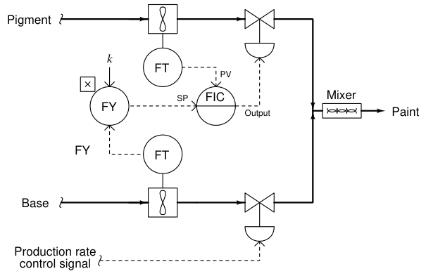
With identical flow range calibrations in both flow transmitters, this multiplying constant k directly determines the pigment-to-base ratio (i.e. the ratio will be 1:1 when k = 1; the ratio will be 2:1 when k = 2, etc.). If the k value is easily adjusted by a human operator, mixing ratio becomes a very simple parameter to change at will, just as the total production rate is easy to adjust by moving the base flow control valve.
Another example of ratio control at work is in a process whereby hydrocarbon gases (usually methane) are converted into hydrogen gas and carbon dioxide gas. This is known as the steamhydrocarbon reforming process, and it is one of the more popular ways of generating hydrogen gas for industrial use. The overall reaction for this process with methane gas (CH4) and steam (H2O) as the reactants is as follows5:
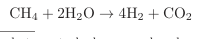
5The conversion from hydrocarbon and steam to hydrogen and carbon dioxide is typically a two-stage process: the first (reforming) stage produces hydrogen gas and carbon monoxide, while a second (water-gas-shift) stage adds more steam to convert the carbon monoxide into carbon dioxide with more hydrogen liberated. Both reactions are endothermic, with the reforming reaction being more endothermic than the water-gas-shift reaction.
This is an endothermic chemical reaction, which means a net input of energy is required to make it happen. Typically, the hydrocarbon gas and steam are mixed together in a heated environment in the presence of a catalyst (to reduce the activation energy requirements of the reaction). This usually takes the form of catalyst-packed metal tubes inside a gas-fired furnace. It is important to control the proportion of gas to steam flow into this process. Too much hydrocarbon gas, and the result will be “coking” (solid hydrocarbon deposits) inside the heated tubes and on the surface of the catalyst beads, decreasing the efficiency of the process over time. Too much steam and the result is wasted energy as unreacted steam simply passes through the heater tubes, absorbing heat and carrying it away from the catalyst where it would otherwise do useful work. One way to achieve the proper ratio of hydrocarbon gas to steam flow is to install a normal flow control loop on one of these two reactant feed lines, then use that process variable (flow) signal as a setpoint to a flow controller installed on the other reactant feed line. This way, the second controller will maintain a proper balance of flow to proportionately match the flow rate of the other reactant. An example P&ID is shown here, where the methane gas flow rate establishes the setpoint for steam flow control:
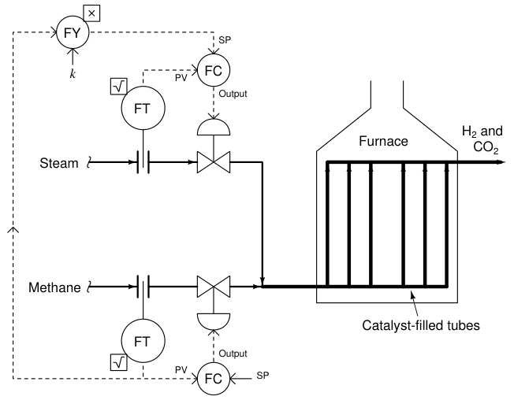
Note how the methane gas flow transmitter signal goes both to the methane flow controller and to a multiplying relay that multiplies this signal by a constant value (k) before passing it on to the steam flow controller as a setpoint. This k value sets the ratio of steam flow to methane flow. Although this might appear to be a cascade control system at first glance, it is actually quite different. In a cascade system, the output of one controller becomes the setpoint for another. Here in a ratio control system, the process variable of one controller becomes the setpoint for another, such that two process variables remain in constant proportion (ratio) to one another. If the two flow transmitters are compensated to measure mass flow, the ideal value of k should be set such that two molecules of steam vapor (H2O) enter the reforming furnace for every one molecule of methane (CH4). With a 2-to-1 molecular ratio of steam to methane (2 moles of steam per one mole of methane), this equates to a 9-to-4 mass flow ratio once the formula weights of steam and methane are calculated6. Thus, if the methane and gas flowmeters are calibrated for equal mass flow ranges, the ideal value for k should be 9
4, or 2.25. Alternatively, the flow transmitter calibrations could be set in such a way that the ideal ratio is intrinsic to those transmitters’ ranges (i.e. the methane flow transmitter has 2.25 times the mass flow range of the steam flow transmitter), with k set to an ideal value of 1. This way a 9:4 ratio of methane mass flow to steam mass flow will result in equal percentage output values from both flow transmitters. In practice, the value for k is set a bit higher than ideal, in order to ensure just a little excess steam to guard against coking inside the reaction heater tubes7.
6Steam has a formula weight of 18 amu per molecule, with two hydrogen atoms (1 amu each) and one oxygen atom (16 amu). Methane has a formula weight of 16 amu per molecule, with one carbon atom (12 amu) and four hydrogen atoms (1 amu each). If we wish to have a molecular ratio of 2:1, steam-to-methane, this makes a formula weight ratio of 36:16, or 9:4. 7It is quite common for industrial control systems to operate at ratios a little bit “skewed” from what is stoichiometrically ideal due to imperfect reaction efficiencies. Given the fact that no chemical reaction ever goes to 100% completion, a decision must be made as to which form of incompleteness is worse. In a steam-hydrocarbon reforming system, we must ask ourselves which is worse: excess (unreacted) steam at the outlet, or excess (unreacted) hydrocarbon at the outlet. Excess hydrocarbon content will “coke” the catalyst and heater tubes, which is very bad for the process over time. Excess steam merely results in a bit more operating energy loss, with no degradation to equipment life. The choice, then, is clear: it is better to operate this process “hydrocarbon-lean” (more steam than ideal) than “hydrocarbon-rich” (less steam than ideal).
We could add another layer of sophistication to this ratio control system by installing a gas analyzer at the outlet of the reaction furnace designed to measure the composition of the product stream. This analyzer’s signal could be used to adjust the value of k so the ratio of steam to methane would automatically vary to ensure optimum production quality even if the feedstock composition (i.e. percentage concentration of methane in the hydrocarbon gas input) changes:
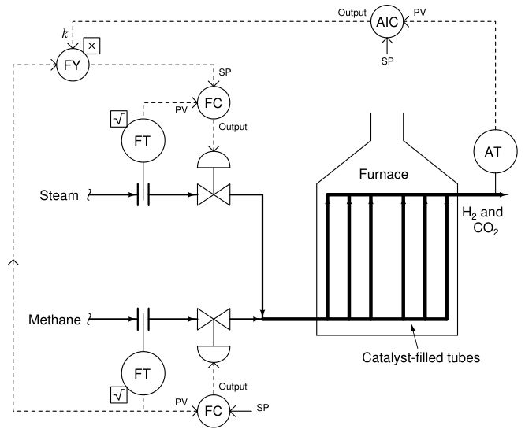
As we saw before, pure methane feed requires a 9-to-4 steam-to-methane mass flow ratio for the desired reaction to be stoichiometrically balanced. This mass ratio, however, is not balanced for hydrocarbons other than methane. Ethane (C2H6) processed in the same way requires a 12-to-5 steam-to-ethane mass flow ratio. Propane (C3H8) requires a 26-to-11 steam-to-propane mass flow ratio. If the hydrocarbon feed to the reforming furnace varies in composition, the steam flow ratio (k) must change accordingly for efficient reaction.